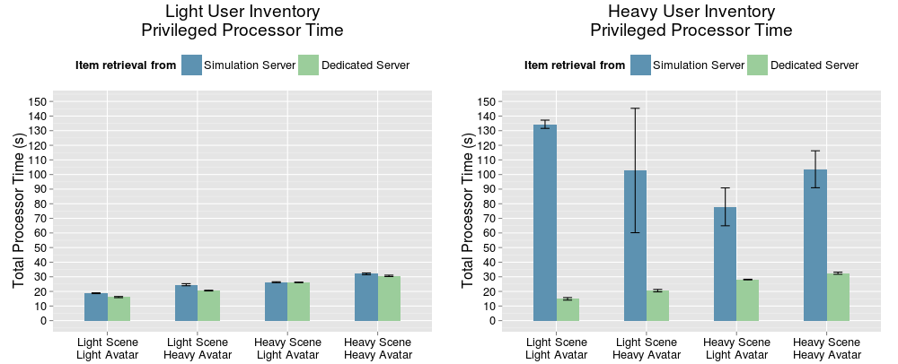

Measuring and Tuning Performance of
Virtual Environment Servers:
Experiments With OpenSimulator
Eugenia Gabrielova
Advancement Talk, 3.13.15
University of California, Irvine


Virtual environments are online platforms where people can work, play, socialize, and build.


Why research virtual environments?
Despite growing demand, existing systems do not support vast, seamless virtual environments.
Scope: multi-user real-time virtual environments
- 3D virtual environment with many simultaneous users.
- Environment is accessed through client viewer application.
- User actions are immediately reflected in the environment and distributed to other users.
Many factors impact virtual environment performance.
- Real-time state updates
- Underlying hardware and network limitations
- Heterogeneous client viewer implementations
- Unpredictable user behavior
Research Motivation
What techniques can be used to improve performance of virtual environment servers?
Q1. How can virtual environments mitigate unreasonable behavior from clients?
Q2. What part of the login procedure has the highest impact on server performance upon a user joining the environment?
Contribution
- Experimental design for systematic performance studies of virtual environment servers.
- Identifies situations in which virtual environment clients behave unreasonably, and shows how to mitigate them.
- Motivates the study of automated techniques for virtual environment performance measurement.
Agenda
- OpenSimulator, our platform for 3D virtual environment research
- Experiment 1: Systematic study of unreasonable client behavior
- Experiment 2: Systematic study of server performance impact upon user login.
- Next Steps and Conclusion: Future research directions for improving performance of virtual environment systems
OpenSimulator is an open source 3D virtual environment server.
OpenSimulator Features
[OpenSimulator, 2015, http://opensimulator.org/]
- Online multi-user 3D simulation servers
- 3D virtual environments of variable sizes
- Support for multiple clients and protocols
- Data management and login services for simulation servers
- Real-time physics simulation
OpenSimulator Client Updates
Clients send streams of updates to simulation server.
OpenSimulator Client Updates
Clients send streams of updates to simulation server.

OpenSimulator Client Updates
Clients send streams of updates to simulation server.
OpenSimulator Client Update - Example Steps
- User sits down.
- User's client viewer sends updated position to
simulation server. - Server processes update packet.
- Server sends update to other users.
Agenda
- OpenSimulator, our platform for 3D virtual environment research
- Experiment 1: Systematic study of unreasonable client behavior
- Experiment 2: Systematic study of server performance impact upon user login.
- Next Steps and Conclusion: Future research directions for improving performance of virtual environment systems
Experiment 1 Motivation: Unreasonable client behavior in a virtual conference setting
Observation: Server load increased when certain clients entered virtual environment.
Experiment 1 Motivation: Unreasonable client behavior in a virtual conference setting
Cause: Clients sent update streams to server with tiny position changes.

Experiment 1 Motivation: Unreasonable client behavior in a virtual conference setting
Engineering Solution: Added filter early in processing stage to discard agent update packets with insignificant position update values.

Experiment 1 Motivation: Unreasonable client behavior in a virtual conference setting
Q1. How can virtual environments mitigate unreasonable behavior from clients?
Experiment 1: Experiment Design
- To simulate conference, users enter scene and sit down
- To control client behavior, used synthetic client bots
- To eliminate noise, built barebones environment
- To measure performance impact, measured steady-state server load
- To collect data, used OpenSimulator internal monitoring framework
Experiment 1: Experiment Design
Sitting down removes a user from the physics simulation.
Experiment 1: Findings - Server Load

Experiment 1: Findings - Agent Update Packets
Experiment 1: Findings - Agent Update Packets
Experiment 1: Findings - Agent Update Packets

Experiment 1: Lessons Learned
- Our experiments confirm that filtering optimization worked.
- Initial agent processing code is a critical code path.
- Shows one strategy by which virtual environment servers can mitigate unreasonable client behavior.
Agenda
- OpenSimulator, our platform for 3D virtual environment research
- Experiment 1: Systematic study of unreasonable client behavior
- Experiment 2: Systematic study of server performance impact upon user login
- Next Steps and Conclusion: Future research directions for improving performance of virtual environment systems
Experiment 2: Exploring Performance Impact
of User Login
Goal: Understanding why the entrance of a user into a virtual environment is such a heavy process.

Experiment 2: Exploring Performance Impact
of User Login - Login Steps
- User enters environment through client viewer.
- Client requests scene and inventory from server
- Server checks permissions, then sends scene and inventory to client.
- Client viewer loads scene and inventory.
Experiment 2: Exploring Performance Impact
of User Login - Experiment Design
- Three Factors: Inventory Size, Avatar Complexity, Scene Complexity
- Measure server load for 10 minutes after user login.
- Clear cache - user in each experiment enters a "new" scene
- Control complexity of the experiment - measure load of a single user As simple as possible while still being significant
Experiment 2: Performance Factors - Inventories
Experiment 2: Performance Factors - Avatars

Experiment 2: Performance Factors - Scenes


Experiment 2: Experiment Setup

Experiment 2: Performance Findings - Inventories
TODO
Experiment 2: Performance Findings - Avatars
TODO
Experiment 2: Performance Findings - Scenes
TODO
Experiment 2: Follow-Up Study Adds Dedicated Inventory Server

Experiment 2: Findings of Follow-up Study with Dedicated Server
Experiment 2: Exploring Performance Impact
of User Login - Findings
For users with heavy inventory, server loads decreased by 63.9% - 88.9% after dedicated server was added.Experiment 2: Exploring Performance Impact of User Login - Findings
- Manual overhead of realistic virtual environment experiments is heavy.
- One client configuration exhibited unreasonable behavior during some logins.
Agenda
- OpenSimulator, our platform for 3D virtual environment research
- Experiment 1: Systematic study of unreasonable client behavior
- Experiment 2: Systematic study of server performance impact upon user login
- Next Steps and Conclusion: Future research directions for improving performance of virtual environment systems
Research Motivation
What techniques can be used to improve performance of virtual environment servers?
✓ Systematic studies of mitigation strategies for unreasonable client resource demands.
Next: Automating systematic performace studies of virtual environment systems
Future Work: Automating systematic performace studies of virtual environment servers
- Synthetic load test clients that cause realistic server load
- Automated systematic study workflows
- Record and replay capability for virtual environment testing
(e.g., Selenium for web applications [Bruns et. al., 2009; Holmes & Kellogg, 2006])
Conclusions
- Virtual environment experiment design isn't easy!
- Systematic performance studies help pinpoint performance issues.
- Critical code paths in virtual environments can have significant performance impact.
- Automated techniques needed to address manual overhead of virtual environment experiments.